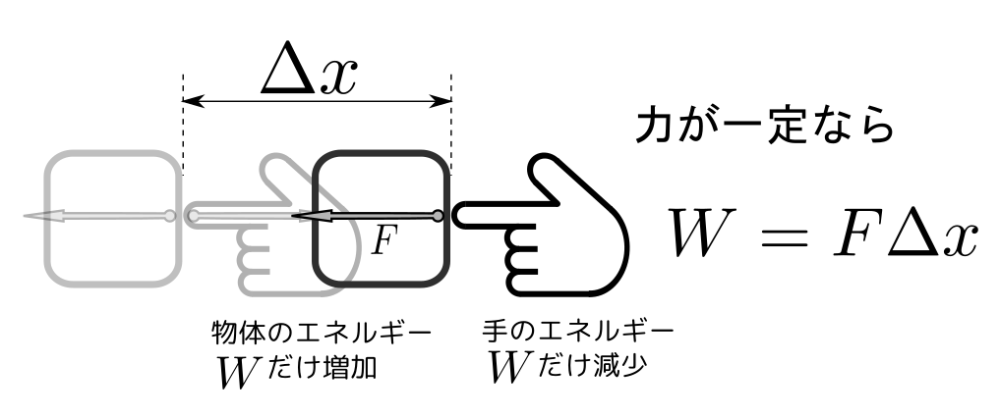

熱力学の教科書の書き方にはいくつかの「流儀」があります。このWebTextでは、「熱力学〜現代的視点から」（田崎晴明）の流儀に従って、
という流れで熱力学で大事な概念である「熱」と「エントロピー」を定義するようにしています。本によって、これ以外にもいろいろな流儀があります。
特に、$F$と$U$を「操作における仕事」ヘルムホルツ自由エネルギー$F$は「等温操作における最大仕事」を使って、内部エネルギー$U$は「断熱操作における仕事」を使って定義される。これについては以下でじっくりと説明していく。を使って定義しているのが特徴です。
まず一つの問いを発しよう。
答はいろいろあるだろう。
この答は部分的に正しいものもあるが、なかなか満足できる説明にはなってない。
特に注意すべきことは、
という点が曖昧な説明が実に多いということである。物理量にはstockとflowの２種類があり、この区別がつかないままで話をするのは、非常に危険である。
状態量（stock）は名前の通り、「ある状態」に対して定義されているもの。流れ（flow）の方はある状態から別の状態へと変化する際にその系から流れ出たりその系に入ってきたりしたもの。「熱」はflowとして定義されているものである。「物体の振動のエネルギー」という答は、むしろstockとして説明されているので、正しくない。
「熱」はどのような現象に現れるかというと、たとえば
という現象が起きたとき、我々は「熱が100度Cの水から0度Cの水に向けて移動した」と言う。
熱はエネルギーという状態量（stock）が移動する、その移動量（flow）である。
この場合、温度に関係する「眼には見えないエネルギー」が存在することを暗黙に仮定しているのだが、このエネルギーを「内部エネルギー」と呼ぶ（記号は$U$を使う）。
さて、こうなると次の質問もしたくなる。
こちらも、曖昧だったりなかなかぴったりした答が返ってこないことが多い問いである。
エネルギーの定義をちゃんと（短く）説明することは難しいのだが、「もっているもの」とか「たまっていて移動するもの」では何も説明したことにはならないだろう。また「仕事をする能力」というのはある程度正しいが、これだと「一晩寝たらエネルギーが回復してまた仕事ができるようになる」というふうに誤解するかもしれない（人間の場合は寝ることでまた仕事ができるようになるかもしれないが、物理用語としての仕事はそういうものではない）。
具体的には、エネルギーとは下の図のように「仕事をされたことによって増減する物理量」ということになる（下の図こそがエネルギーの定義である）。

さて、もう一つ戻って、「仕事」の定義を考えてみよう。力$\vec F$を受けた物体が$\Delta \vec x$移動した時、仕事は$W=\vec F\cdot\Delta \vec x$である。この仕事を行ったとき、行う方は$W$だけエネルギーを失い、された方はエネルギーが$W$増える。よって一方で$-W$、もう一方で$+W$だけエネルギーが変化して、全体のエネルギーは保存する、というのがエネルギー保存則の導出である。
注意して欲しいのは、なぜこうなったのかというと「エネルギー保存則があるから」ではなく、こうなるような量として「エネルギー」を定義し求めたからだということである。たとえば運動エネルギー${1\over2}mv^2$、重力の位置エネルギー$mgh$、バネの弾性エネルギー${1\over2}kx^2$、その他いろんなエネルギーは全て「仕事をしたらその分だけ増減する量」となるように定義され計算されている（たとえば動いている物体は何かにぶつかって押すことで仕事ができるが、止まるまでどれだけ仕事ができるかを計算するとちゃんと${1\over2}mv^2$になる（「そうだっけ？」と思った人は力学の本を見返してみよう）。
力学というと主役は「力」かと思いきや、エネルギーの話をする時には主役は力そのものではなく、それに移動距離を（内積の意味で）掛算した「仕事」になる。それはなぜかというと、こう定義された仕事を使うと、
仕事の原理
道具を使っても仕事の量は変わらない。ということが言えるからである。たとえばテコや動滑車などの道具を使うと、力を増幅することはできる。しかし、仕事は「道具による増幅」ができない。だからこそエネルギーを考えるときは力学の主役は「仕事」になるのである。
と、ここまでいかにも当然のように「エネルギーは保存する」という話をしてきたが、実は実際に見られる物理現象を見ていると、エネルギーが保存するようにはちっとも見えない。たとえば物体を落下させると床にあたり跳ね返るが、けっして元の高さまで戻ってこない（位置エネルギー$mgh$がどこかへ行ってしまった）。これを「物体が原子・分子でできていること」に注意して考えると、
のように説明ができる。↑にアニメーションがあるので眺めてみて欲しい。
同様に、空気中を運動する物体が空気抵抗によって止まっていく様子を分子運動という観点から見たのが、
である（↑にアニメーションがある）。
さて、以上のような説明を聞いて、
と、思う人もいるかもしれない。ところが、そうではないのである。ここで分子運動の話をしたのは、あくまで熱力学の背後にある物理を「ちょっと覗いてもらう」為である（いわば「カンニング」なのだ）。どちらの場合も「分子を見る眼」があれば「エネルギーは散逸する（広範囲に広がっていく）だけでなくなってはいない」ということがわかる。しかし、分子などというものの存在が確立するのは熱力学ができてからずっと後である（分子運動という「隠れたエネルギー」の存在は熱力学に必要ない）。
では熱力学の考え方はどうかというと、そういう細かいことを考えるのではなく、目に見える現象だけを追いかけて物理をしよう、というところになる分子運動のエネルギーをちゃんと計算して物理現象を知ろう、というのは「統計力学」の方の守備範囲である。。
力学においてまず仕事を定義し、仕事によってその分だけ増減する量として「エネルギー」を定義した。熱力学でも同様の手順を持って「エネルギー」を定義するのだが、そのエネルギーの定義の仕方にちょっと苦労する部分があること、定義が大きく二つあるということが大事である（これが熱力学の難所その２だろう）。
「エネルギーのような量」の定義の仕方の一つとして、周りとの熱のやりとりを断った（断熱材で周りを覆った）状態で物体（多くの場合気体）に仕事をさせ、その時の仕事によって変化する量として「内部エネルギー$U$」を定義する。
もう一つの「エネルギーのような量」の定義は、周りを熱浴（一定温度に保たれた物体）で覆う。この状態で気体などに仕事をさせると、上の断熱された場合とは違う「仕事」がされるから、その仕事によって増減する「エネルギー」も上の内部エネルギー$U$とは違うものになる。こちらは「ヘルムホルツの自由エネルギー$F$」と呼ぶ。
二つの「周囲の状況が違う気体」に仕事をさせて、その違いを考えるのだが、その違いは「熱」が関与するか否かという差から生まれる。よって、この二つの差から「熱」に関係する量（熱そのものではない）を定義することができるようになるのである。
詳しい説明はあとでじっくりやるので、そこは楽しみにしておいて欲しい。大事なことは「仕事を測る」ということはピストンにかかる力と移動距離という「目に見えるもの」で測定できる。そのように「操作で定義される量」から「熱」という得体の知れない量を導くに至る・・・というところを理解して欲しいのである。